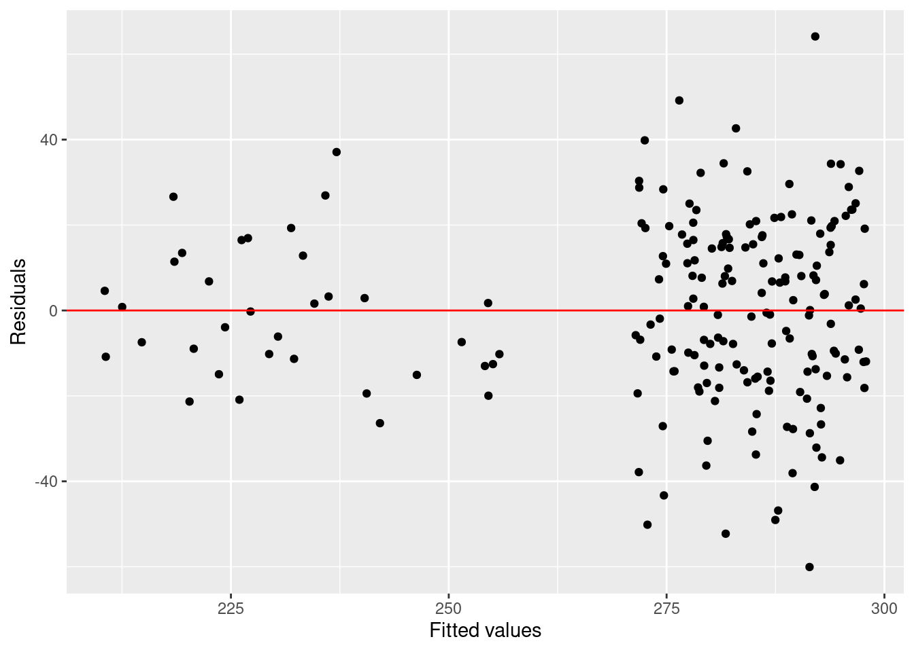

9 Linear regression
- Explain the general structure of a linear model.
- Name the assumption of a linear model.
- Calculate a simple linear regression in R.
With this chapter, we start our journey to statistical modelling. Basically, there are two main reasons why one would like to build a statistical model.
- Explicative modelling: We suppose that there is a relationship between variables and would like to quantify it.
- Predictive modelling: We want to build a model that can (as accurately as possible) predict future values.
In this course, we will focus on explicative modelling and work with linear regression models.
9.1 What is a linear regression model?
The term regression was coined by Francis Galton (1822-1911) who studied the relationship between the height of parents and their children (Fahrmeir, Kneib, and Lang 2009). He showed that taller-than-average parents tended to have children who were smaller than their parents (more towards the average) and smaller-than-average parents tended to have taller children. He called this phenomenon regression towards the mean.
A regression model estimates the relationship between a dependent variable, often called \(y\) and independent variables (or predictors) often termed \(X\). Note the capital letter \(X\) to indicate that it can be a collection of independent variables (a matrix). We try a definition:
A regression model has the form:
\[y = f(X) + \varepsilon\]
- \(y\): dependent variable
- \(f\): type of relationship (function)
- \(X\): independent variables (predictors, explanatory variables)
- \(\varepsilon\): error term
If:
- \(f\) linear (effect of predictors is additive), the model is called linear regression model
- \(X\) is a single predictor, the model is called simple linear regression model, otherwise multiple linear regression model
Components of the model:
- \(f(X)\): systematic or deterministic component
- \(\varepsilon\): stochastic component (error term, residuals)
In a regression model, we are not after the exact values of the dependent variable, but after the systematic influence of predictors on the mean value of the dependent variable. Because of the error term (which can contain random fluctuations, measurement errors etc.), the dependent variable \(y\) is a random variable.
9.2 Simple linear regression
In case we have one predictor only, the model is a simple linear regression model and its geometric form is a line. A line is defined by its intercept (the point where it cuts the \(y\) axis) and its slope. This is exactly the form of a simple linear regression model:
Given data pairs: \((y_i,x_i), \quad i=1,\dots,n\)
\(y\) and \(x\) are numeric variables.
We call the model \[y_i=\beta_0 + \beta_1x_i + \varepsilon_i, \qquad i=1,\dots,n.\]
a simple linear regression model, if the errors \(\varepsilon_1,\dots, \varepsilon_n\) are independent and identically distributed (iid) and
\[\mathrm{E}(\varepsilon_i) = 0, \qquad \mathrm{Var}(\varepsilon_i)=\sigma^2.\]
If additionally \[\varepsilon_i \sim N(0,\sigma^2)\]
i.e. the residuals are normally distributed, we call the model a normal linear regression model.
\(\beta_0\) is the intercept and \(\beta_1\) the slope of the model.
The assumptions of the normal linear regression model can be summarized as LINE:
- Linear relationship between variables
- Independence of residuals
- Normal residuals
- Equality of variance (called homoscedasticity) and a mean of zero in residuals
Before you look at the model results, the confidence intervals of the slope or the intercept, you have to ensure that those assumptions are met!
9.3 Example: Relationship between the time in the library and the travel time
We come back to our lovely getsmarter university and want to study the relationship between the time a student needs to come to the university and the time she spends in the library.
library(tidyverse)
library(infer)
library(moderndive)
library(knitr)Let’s generate the population.
set.seed(123)
student_id <- 1:12000
travel_time <- c(runif(n = 12000 * 0.8, min = 5, max = 40),
runif(n = 12000 * 0.2, min = 60, max = 120))
gender <- sample(c('m', 'f'), size = 12000, replace = TRUE)
residence <- sapply(travel_time, function(x) {
if(x < 30) 'urban'
else 'rural'
})
transport <- sapply(travel_time, function(x) {
if(x <= 10) 'foot'
else if(x > 10 & x <= 15) sample(c('foot', 'bike'), size = 1)
else if(x > 15 & x <= 45) sample(c('bus', 'bike', 'car'), size = 1)
else sample(c('bus', 'car'), size = 1)
})
time_lib <- 5 * 60 - 0.7 * travel_time + rnorm(length(travel_time), 0, 20)
getsmarter_pop <- tibble(student_id, gender, residence, transport, travel_time, time_lib)
getsmarter_pop## # A tibble: 12,000 × 6
## student_id gender residence transport travel_time time_lib
## <int> <chr> <chr> <chr> <dbl> <dbl>
## 1 1 f urban bus 15.1 294.
## 2 2 f rural bike 32.6 254.
## 3 3 f urban bike 19.3 231.
## 4 4 m rural car 35.9 245.
## 5 5 m rural bus 37.9 234.
## 6 6 f urban foot 6.59 303.
## 7 7 f urban bus 23.5 284.
## 8 8 m rural car 36.2 274.
## 9 9 m urban bike 24.3 299.
## 10 10 f urban bus 21.0 282.
## # … with 11,990 more rowsWe survey 200 students.
set.seed(345)
survey_size <- 200
survey <- rep_sample_n(getsmarter_pop, size = survey_size, replace = FALSE, reps = 1)9.3.1 Fit a simple normal regression model
We first check that the linear model makes sense and the relationship between the two variables is (approximately) linear.
ggplot(data = survey, aes(x = travel_time, y = time_lib)) +
geom_point() +
labs(x = 'Travel time (min)', y = 'Time in the library (min)')
This looks reasonably linear and we can proceed with the modelling.
To fit a linear model in R, we use the function lm(). The dependent and the independent varialbes are joined in a formula by a tilde sign ~. You can also omit the word formula and just type time_lib ~ travel_time.
lin_mod <- lm(formula = time_lib ~ travel_time, data = survey)That’s it 😄.
Let’s have a look at the estimated intercept and the slope. The function get_regression_table provides a tidy form of the model results and the function kable() layouts them nicely.
get_regression_table(lin_mod) %>% kable()| term | estimate | std_error | statistic | p_value | lower_ci | upper_ci |
|---|---|---|---|---|---|---|
| intercept | 302.094 | 2.282 | 132.387 | 0 | 297.594 | 306.594 |
| travel_time | -0.766 | 0.051 | -14.990 | 0 | -0.867 | -0.665 |
The estimated intercept equals 302.094 minutes and the slope -0.766 minutes, respectively. We can write our model as:
\[\widehat{\text{time_lib}_i} = 302.094 - 0.766 \cdot \text{travel_time}_i + \varepsilon_i\]
The model estimates a time_lib value for every student \(i\), with \(i\) being an arbitrary student index running from 1 to 200 because we have surveyed 200 students. The “hat” above \(\text{time_lib}_i\) indicates that this is an estimate. The estimated time in the library is the systematic component of the model, namely \(302.094 - 0.766 \cdot \text{travel_time}_i\). The difference of the actual time in the library and this estimated value is the error term or the residuum \(\varepsilon_i\).
To simplify our analysis, we put the original data, estimated values (also called fitted values) and the residuals in one tibble. The respective values can be extracted from the model object lin_mod with the functions fitted() and residuals().
model_res <- survey %>%
mutate(fitted = fitted(lin_mod), residuals = residuals(lin_mod))
model_res## # A tibble: 200 × 9
## # Groups: replicate [1]
## replicate student_id gender residence transport travel_time time_lib fitted
## <int> <int> <chr> <chr> <chr> <dbl> <dbl> <dbl>
## 1 1 1623 m urban foot 7.06 299. 297.
## 2 1 9171 m urban bike 11.3 278. 293.
## 3 1 10207 f rural bus 107. 199. 220.
## 4 1 3506 f urban bus 25.0 326. 283.
## 5 1 8892 f urban bus 28.1 259. 281.
## 6 1 5460 m urban bus 23.6 299. 284.
## 7 1 6120 f urban bus 20.0 268. 287.
## 8 1 865 f urban bike 26.6 290. 282.
## 9 1 11586 m rural bus 114. 207. 215.
## 10 1 8153 f urban foot 8.06 297. 296.
## # … with 190 more rows, and 1 more variable: residuals <dbl>Let’s have a look at the residuals and the fitted values.
ggplot(model_res, aes(x = travel_time, y = time_lib)) +
geom_segment(aes(xend = travel_time, yend = fitted, lty = 'Residuals'), alpha = 0.2) +
geom_abline(intercept = coef(lin_mod)[1], slope = coef(lin_mod)[2], color = "lightblue") +
geom_point(aes(col = 'observed')) +
geom_point(aes(y = fitted, col = 'fitted'), shape = 1, size = 2) +
labs(x = 'Travel time (min)', y = 'Time in the library (min)') +
scale_color_manual(name = '', values = c(observed = 'black', fitted = 'blue'), breaks = c('observed', 'fitted'), label = c('Observed values', 'Fitted values')) +
scale_linetype_manual(name = '', values = ('Residuals' = 'solid')) +
theme(legend.position = 'bottom')
9.3.2 Model assumptions
Before we interpret the meaning of the model parameters intercept and slope, we have to check the model assumptions. We already saw that the relationship is reasonably linear. Let’s look at the rest of the assumptions.
Independent residuals. This is difficult to check and should come with the study design. If you have like in our example independently surveyed students, you can reasonably assume that the both, the data and the residuals are independent. Conversely it means that you cannot use a normal linear regression model for time depenend data (time series) or spatially dependent data. The line you fit will still be correct, but the confidence intervals won’t.
Normal residuals. To check for normality of residuals, we use a graphical tool, namely the so-called qq-plot. It compares random data from a normal distribution with our residuals. If the data fall on strait line (at least approximately) then we can conclude that our residuals are normally distributed.
ggplot(model_res, aes(sample = residuals)) +
stat_qq() +
stat_qq_line() +
labs(x = 'Quantiles of the normal distribution',
y = 'Qauntiles of the residuals')
This looks good 😄. You will need some practice to judge the qq-plots. You need to worry if you see large deviations from the line for small and large values.
Equal variance and zero mean. For the last assumption, we plot the residuals versus fitted values. It is important that the residuals remain (approximately) equally large for small and large fitted values and fluctuate around zero.
ggplot(data = model_res, aes(x = fitted, y = residuals)) +
geom_point() +
geom_hline(yintercept=0, col = 'red') +
labs(x = 'Fitted values', y = 'Residuals')
We have slightly larger residuals for larger fitted values. However, we also have more larger than smaller fitted values (i.e. travel times). This distorts the picture a bit. Overall, there is no serious problem there.
9.3.3 Interprete your model
We can conclude that our model meets all the assumptions. Therefore, we can interpret the estimated parameters and their confidence intervals now.
get_regression_table(lin_mod) %>% kable()| term | estimate | std_error | statistic | p_value | lower_ci | upper_ci |
|---|---|---|---|---|---|---|
| intercept | 302.094 | 2.282 | 132.387 | 0 | 297.594 | 306.594 |
| travel_time | -0.766 | 0.051 | -14.990 | 0 | -0.867 | -0.665 |
We see that the time a student spend in the library decreases with increasing travel time. More precisely, if the travel time increases by one minute, the time spent in the library changes by -0.8 [-0.9, -0.7]. The confidence interval is narrow. This means that the estimation is precise.
Now, we need to frame our result. A decrease by less than a minute per minute travel time sounds rather small. However, if a student needs one hour more to come to the university, she spends roughly 45 minutes less in the library. Basically, the time spent for travelling cannot be spent working in the library. Stated like this, the result is important for students’ time management.
9.4 Practice on your own!
- Predictors do not need to be numeric. Work through Chapter 5.2 in Ismay and Kim (2021) to see an example of a categorical predictor.
9.5 Reading assignment
Chapter 5 in Ismay and Kim (2021)